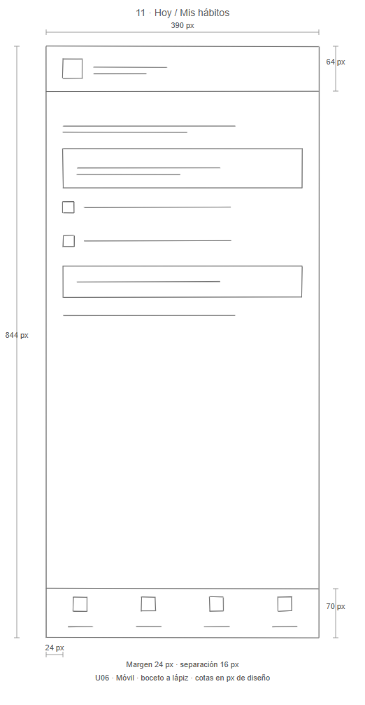
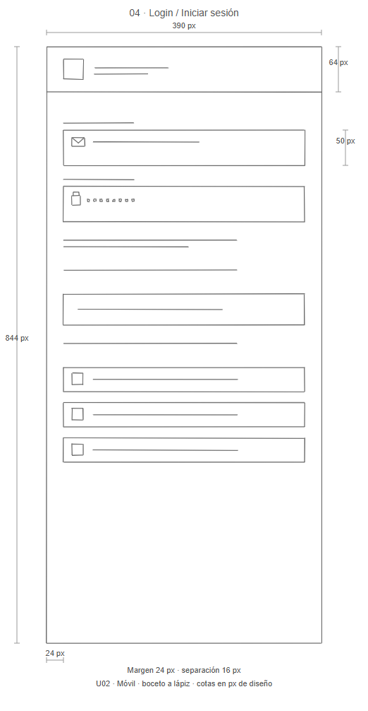

Qué hace cada pantalla
Componentes, acciones, roles y relaciones de las 33 vistas.
Consultar las fichas →De la primera sesión al siguiente hábito. Explora las interfaces de Quantify, sus conexiones y las decisiones detrás de cada paso.

Usuario y administrador · Móvil y PWA
Elige cómo quieres revisar el proyecto.
Requisitos, roles, navegación, decisiones y resultados. Una guía clara para revisar lo solicitado.
Comenzar la revisión →Los 33 sketches originales, organizados por rol y disponibles en móvil y PWA.
Explorar los bocetos →
33 pantallas, 131 conexiones y ocho recorridos guiados. Consulta bocetos, reglas y condiciones.
Abrir el mapa conectado →Prueba las pantallas de acceso, hábitos, análisis y administración en dos formatos.
Probar el recorrido →
Abre el artefacto generado con Archify. Para consultar las 33 pantallas de la ampliación, usa el mapa completo.
Componentes, acciones, roles y relaciones de las 33 vistas.
Consultar las fichas →Las necesidades y reglas que justifican los recorridos.
Consultar requisitos →Proceso, recorridos comprobados, evidencias y pendientes.
Consultar revisión →